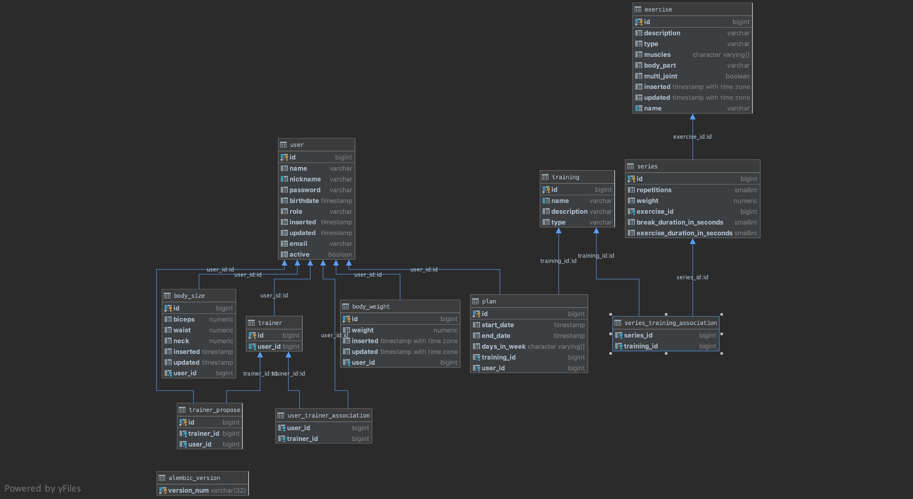

Fitcado (Fitness aplikácia)
- Autoøi
- Filip Èaládi
xcalad01@stud.fit.vutbr.cz -
Backend, databáza
- Peter Horòák
xhorna14@stud.fit.vutbr.cz -
Frontend, databáza
- Andrej Zaujec
xzauje00@stud.fit.vutbr.cz -
Frontend, databáza, backend
- URL aplikace
- 37.205.14.85:8080
- (pokud má aplikace více vstupních stránek, napi¹te obdobnì dal¹í URL)
U¾ivatelé systému pro testování
Uveïte prosím existující zástupce v¹ech rolí u¾ivatelù.
| Login | Heslo | Role |
|---|
| admin | admin | Administrátor |
| peter | peter | Administrátor |
Implementace
Zoznam dôle¾itých èastí projektu
- fitcado/api/app/endpoints.py: Implementácia v¹etkých potrebných endpointov.
- fitcado/api/openapi/api.yaml: Prehµad v¹etkých endpointov popísaných pomocou open api 3 syntaxe.
- fitcado/database/models.py: Popis jednotlivých tabuliek databáze pomocou sqlalchemy
- client/: Implementácia frontendu vo Vue.js
- diagrams/: ERD a use case diagramy
Databáze

Instalace
Struènì popi¹te:
- postup instalace na server,
- softwarové po¾adavky: docker, docker-compose,
- projekt rozbalte príkazom unzip xzauje00, následne v prieèinku xzauje00/iis-fitcado spustte docker-compose up --build
pre rozbehnutie databáze, REST API a iných vecí potrebných pre beh aplikácie. Potom v prieèinku iis-fitcado/client spustte sériu príkazov npm install a npm run serve